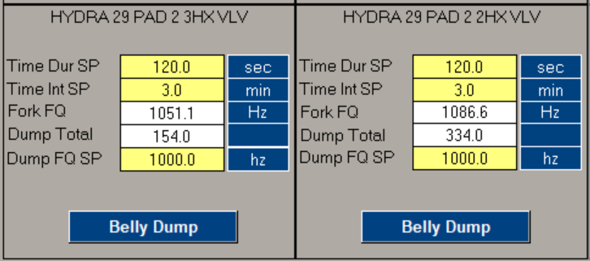
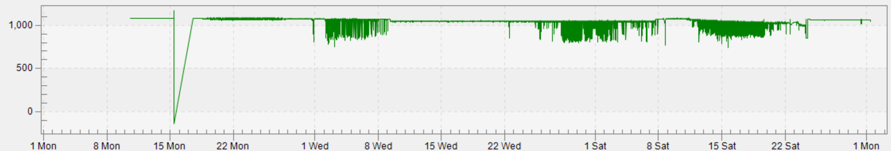

Tools & AI Agents I've Built
SAP Work Order Prioritization Agent for Field Operators
Field operators simply ask the agent for their work orders. It pulls live SAP data, intelligently prioritizes by fastest route, highest production impact, regulatory deadlines, etc., then instantly generates a scannable QR code that opens the optimal route in Google Maps. Operators can tweak the plan anytime and get a new QR in seconds.


Query Quiver – Streamlit Dashboard for Measurement Analysts
Analysts run the same Snowflake queries every week/month but constantly have to edit dates, well names, meter IDs, etc. Query Quiver centralizes every team member’s proven queries in one place, makes them discoverable to the entire team (most analysts didn’t know what others were running), and replaces manual editing with simple dropdowns and date pickers. Users select a query, adjust parameters, see the exact SQL that will run, execute it, view results, download as CSV, and copy the final query if they prefer to run it directly in Snowflake. Saves hours per analyst per week and eliminates copy-paste errors.
Digital Training Hub (SharePoint)
One-stop library with hundreds of standards, videos, PowerPoints, SOPs, and training materials for measurement and operations teams. Fully searchable and kept current.

Training & Analysis AI Agent
Lives alongside the training hub. Users can ask questions, upload gas analyses or charts, and the agent instantly diagnoses issues (contaminated samples, meter problems, etc.) and explains fixes in plain language.

Frac Sand Detection and Auto-Dump System
Prior to this system, sand detection relied on manual methods like handheld flir cameras, or shutting down wells for visual inspections—often catching issues too late, after production equipment was filled with sand, leading to costly downtime, vessel cleanouts, and equipment damage or replacement. I designed this innovative system to detect sand in real-time and automatically manage it, starting with proven detection and followed by an integrated auto-dump mechanism to divert sand before it causes harm. Implemented in my business unit, it delivered an estimated $2 million in annual savings by reducing manual labor for flowback operations and minimizing maintenance and equipment failures. Now scaling enterprise-wide with anticipated savings of $20 million per year.
This screenshot shows real-time data from the system, including sensor readings and operator-configurable set points for thresholds like density or frequency triggers. Operators can fine-tune these on the fly to adapt to varying well conditions, ensuring accurate detection of sand ingress.
This trend graph illustrates the fork frequency (in Hz) fluctuating based on the sensor detecting gas, liquid, or sand. The up-and-down patterns are typical during well upsets, such as bringing a well back online, adjusting chokes, or other events known to dislodge and sweep sand from the reservoir, highlighting the system's ability to respond dynamically to these changes.
More tools and agents (solar/battery optimizer, compliance dashboards, etc.) available on request.